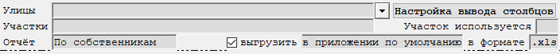

Бланк "Реестр участков/собственников"
Данный бланк предназначен для отображения внесенных данных по участкам или собственникам (рис. 1).

Рис. 1. Бланк "Реестр участков/собственников"|
|
Бланк содержит графы множественного выбора. Подробное описание работы с данными графами находится тут. |
Рассмотрим поля, доступные для заполнения:
-
Улицы - выбираются улицы, по которым необходимо выполнить расчет. Возможен выбор произвольного количества улиц. Если оставить графу пустой, то отбор будет осуществляться по всем улицам.
-
Участки - выбираются участки, по которым необходимо расчет. Возможен выбор произвольного количества участков. Если оставить графу пустой, то отбор будет осуществляться по всем участкам.
-
Отчёт - выбирается тип отчёта - по участкам или собственникам.
-
Настройка вывода- указывается, какие данные необходимо вывести в таблицу.
Присутствуют две настройки вывода столбцов - для реестра собственников и для реестра участков. Чтобы получить доступ к конкретной настройке, необходимо указать тип отчёта в графе Выбор отчёта и только после этого производить настройку вывода столбцов. -
Участок используется - выбирается признак использования участка. Если графа не заполнена, то в выборку попадут все участки.
-
выгрузить ... в формате ... - позволяет выгрузить на диск таблицу через указанное приложение в указанном формате.
После заполнения полей, влияющих на расчет, необходимо пересчитать бланк.
Для этого нажмите кнопку
 на панели инструментов,
клавишу F9, или комбинацию клавиш Ctrl + Enter.
на панели инструментов,
клавишу F9, или комбинацию клавиш Ctrl + Enter.
После пересчета на экране отобразится таблица с данными по участкам или собственникам.